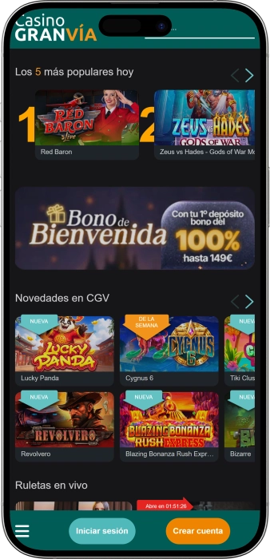

Oferta exclusiva de bienvenida de
Oferta exclusiva de bienvenida de
Casino Gran Vía Madrid — juegos, póker, bares y ambiente en el centro
Reclamar bono
Detalles de bonificación
Casino
Bonos
Rate
Giros gratis
Más info
Conseguir
Ventajas
-
Altas probabilidades de grandes premios
-
Generosos bonos para nuevos jugadores
-
Promociones diarias y ofertas especiales
-
Amplia selección de juegos de mesa
-
Wide range of games
- Casino Gran Vía combina emoción, comodidad y elegancia. Cada visitante disfruta de una experiencia única gracias a la variedad de juegos y atractivos beneficios.
Casino Gran Vía App


Acerca de Casino Gran Vía
El casino se diferencia por su ambiente de palacio histórico y salas llamativas. Además, permite unir juego, coctelería y cena tardía en un mismo plan.
- Bote hasta €20 000+.
- Torneos con premios €5 000+.
- Giros gratis valor €10–€50.
Casino Gran Vía es un casino urbano en pleno centro de Madrid, donde los juegos clásicos se mezclan con el encanto de un edificio histórico. El interior transmite un estilo solemne y cuidado en cada detalle.
Es fácil empezar la noche con una copa y pasar después a las salas de juego. La oferta se apoya en ruleta, juegos de cartas, póker y una zona moderna de máquinas. El ritmo nocturno encaja con quienes buscan un plan con energía y ambiente. El personal suele mantener una atención constante y resolver dudas habituales. En las zonas de bar es sencillo hacer una pausa entre partidas y cambiar de tono. Sus espacios también se prestan a eventos y noches temáticas. Para muchos visitantes, forma parte natural del recorrido por el centro. La propuesta general es un ocio elegante en el que juego y descanso se complementan.
Casino Gran Vía — una noche con estilo madrileño
Casino Gran Vía se percibe como un lugar donde el juego encaja de forma natural en el ambiente de un edificio histórico. El estilo interior apuesta por una “clásica elegancia urbana”: escaleras llamativas, espacios altos, luz cálida y sensación de ceremonia. No es un entorno frío, sino festivo, pensado para jugar y disfrutar. Las salas permiten pasar de zonas tranquilas a otras más dinámicas sin agobios.
En cuanto a horarios, es una opción cómoda para el ocio nocturno: las máquinas suelen estar disponibles desde la mañana hasta bien entrada la noche, y los juegos de mesa en vivo acostumbran a activarse a partir de la tarde y seguir hasta el cierre. Ese ritmo facilita planificar la visita tanto para una parada breve como para una noche completa. En horas punta hay movimiento y energía, mientras que a última hora el ambiente se vuelve más íntimo. Por eso encaja tanto con principiantes como con jugadores habituados.
La parte de bares es clave, porque aquí es habitual alternar partidas y pausas. Dentro aparecen formatos de coctelería, bar asociado a la zona de póker y un bar con aire “panorámico” que acompaña el pulso del centro. Bebidas y picoteo ayudan a mantener un ritmo cómodo sin romper la experiencia. Muchos visitantes empiezan por el bar para entrar en ambiente y luego eligen el juego.
El componente hotelero aporta comodidad a viajeros y a quienes prefieren no depender del transporte al final de la noche. El alojamiento suele sentirse como un formato adulto, tranquilo y orientado a la privacidad. Es una solución práctica para unir paseo urbano, cena y casino sin traslados largos. En escapadas cortas, este tipo de plan resulta especialmente eficiente.
Los eventos forman parte natural del espacio: las salas funcionan bien para celebraciones privadas, encuentros de empresa y programas temáticos. En ciertos periodos el foco se traslada al póker, con días de torneo, formatos especiales y un ambiente más animado. También son habituales las noches con música y un toque “de club” en zonas de bar. Así, Casino Gran Vía se vive como un centro nocturno completo, no solo como un lugar para jugar.
Las promociones y programas de ventajas suelen basarse en la frecuencia de visita y la actividad de juego. En la práctica se traducen en ofertas para clientes habituales, acciones estacionales y beneficios que pueden aplicarse al juego o a servicios asociados. Es común ver detalles de cumpleaños, invitaciones a veladas especiales o privilegios extra en jornadas de torneo. Ese enfoque refuerza la sensación de pertenencia y hace que repetir visita sea más atractivo.
Servicio y pagos en Casino Gran Vía — cómo funciona
El personal de Casino Gran Vía suele operar con un enfoque de premium urbano: en la entrada orientan sobre normas básicas, en las salas controlan el orden y el ritmo, y en barras mantienen un servicio cómodo. Los crupieres en mesa trabajan con un ritmo ágil pero claro, algo clave para quien empieza. En horas de mayor afluencia el trato puede sentirse más formal, y a última hora más relajado, sin perder corrección. La experiencia se apoya en discreción, seguridad y control tranquilo.
En idiomas, lo habitual es contar con español e inglés, y en momentos turísticos es frecuente encontrar apoyo para peticiones sencillas en otros idiomas populares. En juego, la mayoría de procedimientos se basan en términos estándar, por lo que es fácil seguir la dinámica incluso con vocabulario limitado. Ante dudas, el equipo suele explicar con frases cortas para no frenar la partida. Para torneos, reservas o visitas de grupo, lo más práctico es gestionar en el propio punto de información.
La moneda de referencia es el euro, tanto para juego como para restauración. En casinos urbanos de este perfil suelen aceptarse efectivo y tarjetas, aunque algunos servicios pueden tener reglas internas de límites. Si planeas jugar con intensidad, conviene llevar efectivo para cambios rápidos y tarjeta para recargas. En caja suelen facilitar las operaciones de compra de fichas y cierre de cuenta.
Los cajeros y la gestión de efectivo se organizan para que el cliente no tenga que salir del entorno durante mucho tiempo. En la zona céntrica normalmente es fácil localizar un cajero, y dentro se suelen contemplar alternativas para acceder a efectivo mediante servicios bancarios habituales. El cambio de divisa, en formato urbano, suele resolverse mejor en bancos o casas de cambio del centro, por lo que a los visitantes les conviene llegar ya con euros. Si vienes con otra moneda, es recomendable cambiar antes para no perder tiempo en plena noche.
El cobro de premios en casinos presenciales suele ser directo: al terminar, las fichas se canjean en caja por efectivo o se tramita un pago siguiendo el procedimiento interno si la cuantía es alta. Para importes grandes pueden solicitar documento y definir el método de entrega por seguridad y cumplimiento financiero. En torneos de póker, los premios se reparten según estructura y se abonan al cierre del evento mediante caja u organización. Es importante conservar justificantes, especialmente si prevés mover cantidades relevantes.
La fiscalidad de los premios depende del estatus del jugador y de la normativa aplicable, además de si se es residente o no. Para el visitante, lo esencial es saber que el casino puede exigir identificación en pagos elevados y emitir documentación conforme a sus requisitos. Si se trata de un premio importante, es sensato consultar con un asesor cómo declararlo en el país de residencia. A nivel práctico: lleva documento, guarda comprobantes y planifica un traslado seguro del dinero.
Normas de acceso a Casino Gran Vía — vestimenta, entrada y cómo llegar
Casino Gran Vía mantiene un formato de “noche urbana elegante”, por lo que cuida la imagen y el comportamiento. En la entrada suele exigirse documento para acreditar la edad, y el acceso a menores está restringido. Dentro es importante mantener un tono tranquilo, respetar la dinámica del juego y seguir indicaciones del personal. La foto y el vídeo en zonas de juego suelen estar limitados por privacidad. En mesas es habitual que pidan no usar el móvil durante apuestas y manos. La entrada en estado de embriaguez evidente normalmente no se acepta y puede implicar denegación. Bolsos grandes pueden pasar por control adicional o guardarse en guardarropa. En restauración pueden aplicarse normas de reserva, especialmente por la noche. Fumar suele permitirse solo en áreas señalizadas. Para una visita cómoda, conviene llegar antes de la hora punta para pasar el control con calma. Llegar en metro o a pie desde el centro suele ser lo más práctico, y en coche conviene usar parkings cercanos.
Código de vestimenta
- • Smart casual: calzado correcto, ropa cuidada, sin estilo de playa.
- • No recomendado: chándal, pantalón corto, chanclas, prendas con mensajes agresivos.
- • Por la noche, mejor un punto más formal: camisa y chaqueta opcionales.
Condiciones de acceso
- • Edad: normalmente 18+.
- • Documentación: pasaporte o DNI equivalente.
- • Control: revisión de seguridad estándar en la entrada.
Prohibiciones y límites
- • Grabación en salas de juego sin permiso.
- • Uso activo del móvil en mesa durante la acción.
- • Conductas agresivas o interferir en el juego de otros.
- • Algunos objetos pueden estar restringidos por seguridad.
Parking y transporte
- • Metro: estaciones céntricas en el entorno Gran Vía/Callao/Sol.
- • Autobuses: útiles las líneas nocturnas del centro.
- • Coche: mejor parkings de pago cercanos por la alta afluencia.
- • A pie: encaja perfecto con paseo por el centro y zona de teatros.
Programa de fidelidad de Casino Gran Vía — niveles, bonos y ventajas
Un programa de fidelidad en un casino de este estilo suele funcionar como un “club de cliente habitual”, donde los beneficios crecen con la actividad. La idea es sencilla: te registras, obtienes un perfil y comienzas a acumular puntos por juego y visitas. Los puntos se convierten en bonos de juego, invitaciones a eventos o ventajas en zonas de bar y restauración. A menudo existen propuestas específicas en días de torneos de póker y en periodos estacionales con más afluencia. Para facilitarlo, el sistema puede operar con tarjeta digital o registro interno, sin necesidad de llevar plástico. Los niveles aportan acceso más rápido a atenciones y prioridad, especialmente por la noche. Cuanto más alto el nivel, más visibles las ventajas: desde fichas promocionales hasta mejores condiciones en eventos. También se valora mucho el detalle de cumpleaños y los premios por regularidad. Para jugadores activos, lo más práctico es el canje de puntos o el cashback, que añade valor real a cada visita. Usado con criterio, el club hace que el ocio sea más rentable y ordenado. Conviene tener en cuenta que condiciones y campañas pueden variar según día y tipo de juego.
Condiciones de registro
- • Ser mayor de 18 años y presentar documento.
- • Completar alta en el punto de atención al cliente.
- • Aceptar normas internas y pautas de juego responsable.
- • Activación del perfil el mismo día, con posible bono inicial.
Cómo se acumulan puntos
- • Slots: 1 punto por cada €10 apostados.
- • Ruleta/mesa: 1 punto por cada €20 de apuesta media por hora.
- • Póker: puntos por rake/participación en torneos (p. ej., 1 punto por €5 de comisión).
- • Extra: +10–20% de puntos en días de torneo o festivos.
Niveles y cómo lograrlos
- • Bronze: 0–199 puntos — ventajas base y ofertas de inicio.
- • Silver: 200–699 puntos — mejor canje y promos prioritarias.
- • Gold: 700–1499 puntos — bonos aumentados e invitaciones.
- • Platinum: 1500–2999 puntos — límites ampliados y ofertas personalizadas.
- • VIP: 3000+ puntos — condiciones individuales y eventos privados.
Bonos y ventajas
- • Bono de bienvenida: €10–€30 en juego promocional o fichas para empezar.
- • Canje de puntos: 100 puntos = €5–€10 para juego (según campaña del día).
- • Cashback: 5% (Silver), 8% (Gold), 12% (Platinum), hasta 15% (VIP) en días seleccionados.
- • Cumpleaños: detalle de €20–€50 y/o consumición de cortesía.
- • Ventajas de torneos: descuento de €10–€30 en buy-in o rebuy promocional.
- • Bares y restaurante: 10–20% de descuento en productos seleccionados por franjas horarias.
- • Eventos: invitaciones, prioridad de acceso y welcome-drink.
- • Servicio: entrada más ágil en hora punta y apoyo con reservas (Gold+).
Proveedores de software
Entretenimiento y juegos e Casino Gran Vía
Bonos y promociones en Casino Gran Vía — ofertas, premios y eventos de temporada
Además del club de fidelidad, en Casino Gran Vía suelen aparecer campañas que convierten la visita en un plan más “de evento”. Estas ofertas a menudo se ligan a días concretos, zonas de juego o periodos de torneos. En slots son habituales sorteos, mini botes y campañas de tiradas que aportan emoción incluso con apuestas moderadas. En mesas, lo más común son propuestas de “noche larga”, con fichas promocionales o créditos extra cuando se alcanza cierta actividad. En póker, el motor son las series: jornadas con premios añadidos y formatos pensados para distintos niveles. Para quienes buscan ambiente, destacan acciones de bar, menús tardíos y noches con música de estilo club. Los eventos estacionales refuerzan el efecto festivo con decoración, coctelería especial y programación nocturna. En momentos de alta afluencia en el centro, se activan planes más completos para ofrecer una noche “resuelta”. También pueden existir promos para grupos, con paquetes combinados de consumo y ocio. Para la comodidad, a veces se añaden ventajas vinculadas a parkings cercanos o detalles por acudir temprano. La idea general es ampliar la experiencia más allá de la apuesta. Para aprovechar mejor, conviene seguir el calendario de torneos y la actividad nocturna de bar.
- • Botes y mini sorteos en slots: premios de €1 000–€20 000 según mecánica del día.
- • Paquetes de giros gratis: valor €10–€100 al cumplir condiciones (p. ej., serie de juego).
- • Cash drops en slots: premios rápidos de €200–€2 000 en franjas horarias seleccionadas.
- • Happy hours en bar: 2×1 en cócteles o 20% de descuento al inicio de la tarde-noche.
- • Días especiales de póker: añadido al prize pool de €1 000–€10 000 en una serie.
- • Satélites y clasificatorios: buy-in desde €20–€50 para acceder a torneos mayores.
- • Combos nocturnos: “snack + bebida” con 10–15% de descuento a partir de cierta hora.
- • Semanas temáticas: menús y cócteles especiales, y detalle de €5–€20 en juego promocional.
- • Premios por actividad en mesas: fichas promo de €10–€50 al alcanzar tiempo objetivo.
- • Fechas señaladas: welcome-drink o crédito promo de €5–€15 en días festivos.
Juegos populares en Casino Gran Vía — de la ruleta al póker
La oferta de Casino Gran Vía se apoya en los juegos más reconocibles, valorados tanto por visitantes como por jugadores habituales. La ruleta suele sentirse como el “centro” de la noche: ritmo rápido, reglas claras y emoción constante. El blackjack añade estrategia y decisiones, por eso atrae a quienes prefieren controlar el juego. El bacará destaca por su sencillez y su estilo clásico, ideal cuando apetece un ritmo más calmado. La zona de póker crea una comunidad propia, donde importan torneos, mesas de cash y el componente social. Las slots ofrecen un formato libre: sesiones cortas, cambio de temática y juego a tu ritmo. Las opciones electrónicas reducen la barrera de entrada y permiten aprender sin esperar mesa disponible. Muchos clientes combinan: un tramo de slots para calentar, ruleta para la adrenalina y una pausa de bar para cerrar. Para principiantes es un recorrido cómodo, porque la experiencia se entiende rápido. Para jugadores con experiencia, el valor está en poder diseñar la noche alternando intensidad y descanso. Al final, el casino se vive como un espacio versátil para distintos estilos de juego.
- • Ruleta (americana/francesa): clásica, rondas rápidas y variedad de apuestas.
- • Blackjack: decisiones y estrategia con gestión de riesgo.
- • Baccarat / Punto Banco: formato sencillo, ritmo estable y tradición.
- • Póker (Texas Hold’em, Omaha, etc.): torneos y cash games para perfil competitivo.
- • Máquinas (Slots): amplia selección de temas, volatilidad y apuestas por giro.
- • Video póker: combinación de tragaperras y lógica de cartas.
- • Ruleta electrónica: ciclo rápido, ideal para familiarizarse con reglas.
- • Mesas electrónicas / i-tables: versión tecnológica con dinámica ágil.
Apuestas en Casino Gran Vía — mínimos y máximos por juego
Los rangos de apuesta en Casino Gran Vía dependen de la mesa concreta, la hora y la afluencia. Por la noche y en fin de semana los mínimos pueden subir por demanda, mientras que en franjas más tranquilas suelen aparecer opciones más accesibles. En zonas electrónicas los límites suelen ser más suaves, lo que facilita probar juegos sin presión. A continuación tienes referencias orientativas para planificar presupuesto.
| Juego | Apuesta mínima | Apuesta máxima |
|---|---|---|
| Ruleta (mesa) | €2 | €500 |
| Ruleta electrónica | €0.50 | €100 |
| Blackjack | €10 | €1 000 |
| Baccarat / Punto Banco | €20 | €2 000 |
| Póker cash | ciegas €1/€2 | ciegas €10/€20 | Torneos de póker | buy-in €50 | buy-in €500 | Slots | €0.10/giro | €10/giro | Video póker | €0.25 | €5/crédito | Mesas electrónicas | €1 | €200 |
Eventos y ocio en Casino Gran Vía — música, shows y ambiente nocturno
Casino Gran Vía suele vivirse como un lugar donde la noche fluye sin esfuerzo: puedes empezar en el bar, pasar al juego y volver a la música y la conversación. La programación regular se concentra en horas tardías, cuando el centro está más vivo y el ambiente interior se vuelve más cercano al estilo club. En esas franjas es habitual encontrar sesiones con DJ o acompañamiento musical que marca ritmo sin resultar excesivo. Es ideal para quien busca noche, pero con comodidad y un entorno cuidado.
Una línea potente de actividad llega con el póker: días de torneo, series y formatos especiales crean un aire competitivo y atraen a una comunidad fiel. En esos periodos se refuerza la experiencia con detalles como consumiciones de bienvenida, pequeñas celebraciones tras finales y una noche más animada. Incluso si no juegas póker, el entorno resulta atractivo por la energía y la sensación de “gran noche”. Además, suele ser posible seguir momentos clave manteniendo una distancia cómoda.
Otro bloque lo forman los eventos privados y corporativos: el carácter histórico del edificio encaja con cenas cerradas, presentaciones, celebraciones y planes “llave en mano”. En estos casos se utilizan salas específicas, coctelería y una programación a medida. Esto convierte al casino en un espacio demandado cuando se busca ubicación central y un marco arquitectónico impactante. Para el invitado, se siente como una fiesta elegante con opción de añadir juego.
La temporada también influye: semanas temáticas, noches festivas, elementos de show y acentos gastronómicos. En periodos de celebración el ambiente se vuelve más ceremonial, y la coctelería suele incorporar propuestas especiales y menús por pases. El resultado es un ocio integrado donde “música + cócteles + juego” forman un plan completo y flexible.
- • Sesiones DJ y noches musicales: toque club en zonas de bar, sobre todo de noche.
- • Noches temáticas: programas por temporada, festividades y momentos del calendario urbano.
- • Torneos y series de póker: competición regular, finales y jornadas especiales.
- • Emisión de deportes: partidos destacados en un entorno cómodo.
- • Experiencias de coctelería: degustaciones, cartas de autor y servicios nocturnos.
- • Eventos privados: cumpleaños, empresa, cenas cerradas.
- • Escenarios VIP: juego privado y atención personalizada bajo solicitud.
- • Espacios fotogénicos: arquitectura e interiores como parte del plan.
Bares, restaurantes y descanso en Casino Gran Vía — gastronomía y comodidad
El descanso en Casino Gran Vía se basa en una idea clara: una noche sin perder tiempo en desplazamientos. Puedes cenar, pasar al bar y volver al juego sin salir del complejo. La parte gastronómica es tan importante como el juego, porque el formato de casino urbano invita a estancias largas. Los espacios están pensados para alternar zonas más activas con rincones tranquilos: tras varias rondas, apetece parar y cambiar el ritmo. Esto es especialmente útil en grupos donde no todos quieren jugar al mismo nivel.
La restauración suele orientarse a una cena más completa, con ambiente y buena presentación. Las barras aportan flexibilidad: coctelería, picoteo, pausas rápidas y un tono más nocturno. Para quienes buscan un punto temático, existe un formato de café/restaurante con inspiración asiática que encaja bien a última hora. En conjunto, la gastronomía actúa como parte del ocio, no como un añadido.
El hotel dentro del complejo hace el plan aún más cómodo: tras una noche intensa, no hay que pensar en el regreso, y al día siguiente se puede seguir con el itinerario urbano. Este esquema lo valoran viajeros y asistentes a eventos en el centro. La privacidad y el enfoque adulto del alojamiento ayudan a descansar sin romper el ritmo. Con una ubicación tan céntrica, el casino se convierte en un punto completo para tarde, noche y descanso.
Si buscas una experiencia “de sensaciones”, lo ideal es vivirlo como una secuencia: arquitectura, bar, cena, juego y vuelta al bar. Así se dosifican emociones y la noche se siente equilibrada. En grupos, cada uno encuentra su tempo: unos en mesas, otros conversando con una copa. Por eso el descanso aquí se percibe integrado y bien pensado.
- • Restaurante Círculo Mercantil: cena en ambiente elegante, foco en cocina y servicio.
- • Golden View Bar: bar con sensación panorámica y energía del centro.
- • Baccarat Cocktail Bar: coctelería para pausas entre sesiones de juego.
- • Poker Room Bar: punto cómodo durante la agenda de póker.
- • Gran Café Shanghai: café/restaurante con toques asiáticos para horarios tardíos.
- • Snack Bar / picoteo rápido: paradas cortas sin cena larga.
- • Hotel Círculo Gran Vía: alojamiento en el mismo complejo para máxima comodidad.
Preguntas frecuentes
En muchos casinos urbanos la entrada es gratuita, aunque en noches o eventos especiales puede haber condiciones distintas. Algunos actos pueden requerir registro o acceso específico.
Para cenas, eventos y ciertos formatos de póker, reservar suele ser lo más cómodo. Así se evita esperar en las horas más concurridas.
Lo más seguro es usar la caja y no portar grandes cantidades encima. En premios altos, conviene seguir el procedimiento interno y conservar justificantes.
Lo más fácil es empezar por slots o juegos electrónicos y luego pasar a ruleta. El personal suele ayudar con dudas básicas y en mesa conviene observar el ritmo antes de apostar.